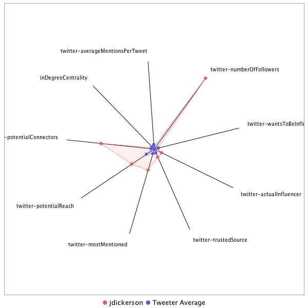

This tweeter has been identified as an influencer. Its target audience and hashtag and word usage are analyzed below.
Basic Statistics
Number of direct followers 2.13218e+06 The peak number of followers that the tweeter had during any time period. Number of retweeters 31 Number of agents that retweeted the key influencer. Number of secondary followers 1771499 The sum of the followers of those who retweeted the key influencer.
Measure Values of Other Influencers node versus Tweeter Average
This compares the measure values of the key influencer with the average values across all tweeters. For each measure line, the center-point means zero and the end-point means the maximum score across all tweeters.

Where was the influencer?
The agent is not recorded as being in any locations. Either he tweeted without geo-tags or we have no information about the tweets he sent.
The agent and retweeters were in 10 different locations.

What hashtags did the influencer use?
This displays the top ranked hashtags that the influencer and its retweeters used.
Rank hashtag Count 1 pharma 593 2 AHCA 574 3 TrumpCare 411 4 biotech 383 5 FDA 364 6 ACA 324 7 Obamacare 316 8 NIH 230 9 adopt 220 10 Comey 194 11 drugprices 176 12 AdoptDontShop 170 13 dog 169 14 Russia 146 15 healthcare 120 16 ParisAgreement 117 17 cat 102 18 CDC 91 19 TrumpBudget 88 20 drugpricing 88 21 rescue 88 22 NYC 81 23 Opioids 80 24 Medicaid 79 25 foster 79 26 omnibus 75 27 CR 71 28 science 64 29 BREAKING 63 30 mtal 59 31 CATS 58 32 FTN 54 33 ThisWeek 53 34 PDUFA 51 35 opioid 51 36 ComeyHearing 49 37 HHS 48 38 climatechange 48 39 dogs 48 40 Ebola 47 41 ParisAccord 43 42 climate 43 43 Qatar 42 44 Trump 39 45 biosimilars 39 46 CA 38 47 FF 37 48 SCOTUS 37 49 GA06 32 50 NotTheComeyHearing 32 51 ODAC 32 52 biosimilar 31 53 dogsoftwitter 31 54 Manchester 29 55 CNNsotu 28 56 PLEDGE 28 57 FDARA 27 58 Zika 26 59 potusabroad 26 60 CBO 25 61 Kitty 25 62 cancer 25 63 shutdown 25 64 Florida 24 65 vaccines 24 66 ASCO17 23 67 LOVE 23 68 NATO 23 69 Syria 23 70 ComeyTestimony 22 71 OpioidCrisis 22 72 US 22 73 AmericaSpeaksOut 21 74 Iran 20 75 VAGov 20 76 ComeyDay 19 77 FBI 19 78 UK 19 79 WHO 19 80 caturday 19 81 ComeyFiring 18 82 Germany 18 83 Tampa 18 84 CongressionalBaseballGame 17 85 GDUFA 17 86 ISIS 17 87 MTP 17 88 generics 17 89 medicare 17 90 BsUFA 16 91 SOS 16 92 Taxreform 16 93 ge2017 16 94 staffysunday 16 95 Addiction 15 96 AdoptMe 15 97 LSSC 15 98 Putin 15 99 SessionsHearing 15 100 TX 15
Tweet List
This displays all of the tweets of the influencer ordered from earliest to latest. Click on a tweet to see its status in Twitter.
Number Tweet ID Date Message 1 859104928714895360 2017-05-01 13:59:11-04 Commentary: Everybody thinks they're losing by @willrahn https://t.co/PqZnzcGeFF 2 859787488193282050 2017-05-03 11:11:25-04 RT @GameDesignerBen: @jdickerson @TheBrowser Here's the project page with the paper and everything: https://t.co/a4wHxnEFPu 3 859778865270534144 2017-05-03 10:37:10-04 Neural Networks For Character Control https://t.co/ZCw9CpWqXF via @TheBrowser 4 859749870487449600 2017-05-03 08:41:57-04 The President’s Secret Air Force https://t.co/nHM7OCfTY5 5 859586905285029888 2017-05-02 21:54:23-04 "People tend to assess the relative importance of issues by the ease with which they are retrieved from memory." https://t.co/gSO775T6Sn 6 859566041273434112 2017-05-02 20:31:28-04 I would have loved to have seen Reagan's face when he had this conversation with an inebriated Nixon. https://t.co/sXrRWtZFMB 7 859514788665229312 2017-05-02 17:07:49-04 Previous from Dwight Moody 8 859514656750284800 2017-05-02 17:07:17-04 “Let our light shine, and if it does, we won't need to tell anybody...Lighthouses don't fire cannons to call attention to their shining." 9 859376005173174272 2017-05-02 07:56:20-04 Morning walk. https://t.co/hTRz8DJ79o https://t.co/MQgVtzJ9WW 10 859132127383781376 2017-05-01 15:47:15-04 "I write on the internet." I'm sorry. https://t.co/S21gl9EItE 11 859100468219445249 2017-05-01 13:41:27-04 Amazing story of the great dog and cat massacre of 1939. https://t.co/lKj1SPxbuR 12 862379175671459844 2017-05-10 14:49:52-04 willy-nilly > sua sponte 13 862364873560391680 2017-05-10 13:53:02-04 “such announcements were truthful but not honest,” https://t.co/MPnfLtN2H5 14 862279636767703040 2017-05-10 08:14:20-04 @Nick_Farruggia Breach of Faith, All the President's Men and The Final Days and Jack Farrell's Nixon just out. 15 862275945113280512 2017-05-10 07:59:40-04 "Negative Capability: capable of being in uncertainties. Mysteries, doubts, without any irritable reaching after fact & reason" -Keats 16 862274808410714112 2017-05-10 07:55:09-04 U.S. Commerce's Ross says 3 percent GDP growth not achievable this year https://t.co/AqR3zBN1FS 17 862116222686646276 2017-05-09 21:24:59-04 RT @SenatorBurr: I am troubled by the timing and reasoning of Director Comey’s termination. 18 862009982040117249 2017-05-09 14:22:49-04 Why You Can’t Concentrate at Work (compelling stories through alerts?)- The Wall Street Journal https://t.co/0OXQn1fmKN 19 861912897454305280 2017-05-09 07:57:02-04 A theory about the “risk” appeal of candidate Trump “Real Life is Risk Taking” — @nntaleb https://t.co/lwhbE2IKiV https://t.co/r1QkCaGxqp 20 861792206725820417 2017-05-08 23:57:28-04 Re-reading The Dead just before bedtime was maybe a bad idea. 21 861789137480949761 2017-05-08 23:45:16-04 "Perhaps the most important determining factor of each man’s relative influence would be his ability to establish... https://t.co/5xviFjJIYn 22 861728034738638848 2017-05-08 19:42:28-04 #kneedy https://t.co/Mvo19dNoNK https://t.co/JpJzSewkYS 23 861573047584772097 2017-05-08 09:26:36-04 RT @axios: Robot sales are just getting started https://t.co/ooRgOFoPEJ https://t.co/EprCEYV3cT 24 860549748373286912 2017-05-05 13:40:22-04 Always in consultation with @hagerhoo. https://t.co/fz3xUwpNOL https://t.co/2ct2zPVnvb 25 860119572552265729 2017-05-04 09:11:01-04 "Mystique is more important than content." -- Nixon 26 862657522104139776 2017-05-11 09:15:55-04 I had forgotten this passage from Rosenstein's confirmation hearing a moth ago which raises contemporary themes: https://t.co/MKqoAaoJvw 27 862692270742654976 2017-05-11 11:34:00-04 McCabe just said the "vast majority of FBI employees enjoyed a deep and positive connection" to Comey, directly contradicting Rosenstein. 28 863068775452692480 2017-05-12 12:30:05-04 "When you don't know something you can say 'I don't know.'" -- Former Bush administration official on public official statements. 29 863781617445285888 2017-05-14 11:42:40-04 RT @FaceTheNation: .@jdickerson's notebook: Lessons from mom on Mother’s Day https://t.co/2cvnz4E9DK 30 863557686117486592 2017-05-13 20:52:51-04 A jam-packed billboard paragraph from @philiprucker https://t.co/ua8vA1UcRR https://t.co/RFQGwv5RqJ 31 863537922733199361 2017-05-13 19:34:19-04 RT @FaceTheNation: Sen. @JohnCornyn, being considered for FBI post, does not agree with Trump that the Russia investigation is a witch hunt… 32 863483778521604096 2017-05-13 15:59:10-04 The lingo of the young Counter-strike players should be studied by a linguist and explained at length. 33 863477866733895680 2017-05-13 15:35:40-04 RT @FoxNews: .@POTUS: "When I say something, I mean it." https://t.co/X03AbRQSzK 34 863421461775622144 2017-05-13 11:51:32-04 Then you'll appreciate this. https://t.co/xS29y4Dz4n https://t.co/UIx6juW7dP 35 863400737480617985 2017-05-13 10:29:11-04 RT @keithcrc: Bush 41 AG:Trump was right https://t.co/WlI17au9yw @GStephanopoulos @ThisWeekABC @MeetThePress @johndickerson @FaceTheNation… 36 863392452585062401 2017-05-13 09:56:16-04 The Sentinel. https://t.co/js5nNKkoyb https://t.co/IJgFCWyL3G 37 863386059090120704 2017-05-13 09:30:52-04 M.M.A. Fighter’s Pummeling of Tai Chi Master Rattles China https://t.co/bVViAVohpP 38 863155906565066752 2017-05-12 18:16:19-04 Very excellent. newyorkermag's photo. https://t.co/JbvQMqirDO 39 863010791041245184 2017-05-12 08:39:41-04 @sara_murphy4 @SlateGabfest Alas, a prophet in his own land... 40 862851575366254593 2017-05-11 22:07:01-04 Special Election Fights Expose House Republicans’ Squabbles With White House https://t.co/MSuwcDeKbY 41 862791783469768705 2017-05-11 18:09:25-04 Fredo Corleone's problem was not that he was fishing without a license. #outofcontextTweets 42 862734544423854080 2017-05-11 14:21:58-04 RT @FaceTheNation: Today @POTUS said he "might release" his tax returns when he is out of office. Trump indicated to @jdickerson that they… 43 862733828422545409 2017-05-11 14:19:08-04 RT @JaxAlemany: A list of the times over the past 3 days that the WH claimed @POTUS fired Dir. Comey based off of Rosenstein's recommendati… 44 862726611136851968 2017-05-11 13:50:27-04 If the presdient had already decided to fire Comey was the DAG letter a crazy unrelated coincidence or an asked for rationalle? 45 862723755608551424 2017-05-11 13:39:06-04 Twitter prompts Tweets with "What's happening?" but these days "What's happening?" Is my default Tweet. 46 862660558474149889 2017-05-11 09:27:59-04 Another puzzler: Rosenstein letter says FBI a mess but FBI morale, competency, director doesn't come up at his confirmation a month ago. 47 862655106378059777 2017-05-11 09:06:19-04 Why is it better for Deputy AG Rosenstein if he was ordered to fire Comey than if it was his 100% idea as WH claimed? 48 862399959693438977 2017-05-10 16:12:27-04 Boy @caityweaver can you write a lovely lovely lede to a great piece. https://t.co/zcYGn0mKSK 49 862385572572221442 2017-05-10 15:15:17-04 Comey fired to restore public trust in FBI. What is trust # in Fox poll? Answer: https://t.co/RNxXkZahcp 50 864313849524109313 2017-05-15 22:57:34-04 "Everybody is so busy running around trying to protect their reputation instead of protecting the republic" https://t.co/i9FhYiUKOu 51 864593687359115264 2017-05-16 17:29:33-04 Comey Memo Says Trump Asked Him to End Flynn Investigation https://t.co/Kfh6ZNt5Zl 52 864497514354835457 2017-05-16 11:07:23-04 Nixon on the weak spine of the egghead class from Haldeman's diaries https://t.co/iIid2BsjeE 53 864469846058123264 2017-05-16 09:17:27-04 So what are we to make of this statement this morning? https://t.co/CQU8zKgMzF 54 864321529613398016 2017-05-15 23:28:05-04 "In the room where it didn't happen" cc:@Lin_Manuel @leslieodomjr https://t.co/CQU8zKgMzF 55 864318582158524416 2017-05-15 23:16:22-04 RT @FaceTheNation: President Trump, June 2015, on Hillary Clinton’s handling of classified information. https://t.co/bFZ8edwQLS 56 864225324707364864 2017-05-15 17:05:48-04 Trump revealed highly classified information to Russian foreign minister and ambassador - The Washington Post https://t.co/VLW4vRGfYg 57 864161559039234049 2017-05-15 12:52:25-04 Former WH Chief of Staff Howard Baker on making clear staff changes at WH "If you cut the dog's tail off, cut it all off at once." 58 865648194130124800 2017-05-19 15:19:47-04 “I just fired [Comey] He was crazy, a real nut job...I faced great pressure because of Russia. That’s taken off.” https://t.co/HeVO0j8nvt 59 866731898453807104 2017-05-22 15:06:02-04 The U.S., Saudi Arabia & creating the conditions threatening the lives of millions from starvation & disease." https://t.co/b9UCik1okY 60 867223776588689408 2017-05-23 23:40:35-04 "We had fed the heart on fantasies, The heart’s grown brutal from the fare; More substance in our enmities Than in our love..." --Yeats 61 867207716804202496 2017-05-23 22:36:46-04 Audi partem alteram. Hear the other side . -- ST. AUGUSTINE 62 867152464054804481 2017-05-23 18:57:13-04 Looks a bit like a rhododendron. https://t.co/huHaFKeCAg 63 867037635814072321 2017-05-23 11:20:55-04 "In U.S. metro areas, huge variation in intermarriage rates" https://t.co/UdSfksqeJV 64 867022450760011776 2017-05-23 10:20:35-04 RT @FaceTheNation: The WH released its first budget proposal yesterday with sizable cuts to entitlement programs. Here's Speaker Ryan on Me… 65 866872931820949504 2017-05-23 00:26:27-04 Under Trump, Agency Rulemaking Grinds to a Halt https://t.co/tPCxn5e508 via @bloombergbna 66 866867355829325824 2017-05-23 00:04:17-04 "The first principle is that you must not fool yourself, and you are the easiest person to fool." https://t.co/E2gNZx6teE 67 866857177482395648 2017-05-22 23:23:51-04 Africa refugees journey https://t.co/MAgxJtV8yn via @BostonGlobe 68 866844289258577920 2017-05-22 22:32:38-04 I think this is what I told progeny I was "helping." My version of the writing trick where you break out each paragraph & read out of order. https://t.co/e49JHYQX0M 69 866839474659110912 2017-05-22 22:13:30-04 @sarahcnyt Thanks! This was for the kids but I'll take it! 70 866836983250898944 2017-05-22 22:03:36-04 There are a whole host of tricks to help writers get distance to edit their own work. Are there tricks like that for checking work in math? 71 866835897530142721 2017-05-22 21:59:17-04 Michael Flynn Misled Pentagon About His Russia Ties, Letter Says https://t.co/cTNJek0EPP 72 866782485119729664 2017-05-22 18:27:03-04 Trump asked intelligence chiefs to push back against FBI collusion probe after Comey revealed - The Washington Post https://t.co/rzPD9GhAcJ 73 866748020473331713 2017-05-22 16:10:06-04 Why It’s So Hard to Admit You’re Wrong https://t.co/0gPSsaJUSV 74 866746268118388736 2017-05-22 16:03:08-04 What Was That Glowing Orb Trump Touched in Saudi Arabia? https://t.co/VribY6OlNt #readinglist #feedly 75 866635257256132608 2017-05-22 08:42:01-04 "Wisdom consists in seeing one’s blindness: knowing what you do not know." https://t.co/wgURwkRJDL 76 866506877299027968 2017-05-22 00:11:53-04 Big if true. from https://t.co/wgURwkA8Md https://t.co/ApwwcyUwhR 77 866502605589147648 2017-05-21 23:54:54-04 "New catchwords hide from us the thoughts & feelings of our ancestors, even when they differed little from our own" https://t.co/wgURwkA8Md 78 866352377422598146 2017-05-21 13:57:57-04 Yup. https://t.co/ZiYzlx3a6q https://t.co/2K6zelr4eR 79 866296273590140928 2017-05-21 10:15:01-04 The traditional sword dance of Saudi Arabia. https://t.co/KFyf3JahtK 80 866292748550361088 2017-05-21 10:01:00-04 Writers from the left and right take on the news this week. https://t.co/4ikChSkrtu 81 866291005573783552 2017-05-21 09:54:05-04 RT @FaceTheNation: Prepare for the show by reviewing the week with our Diary Podcast https://t.co/EvqVPOwLNw 82 866289446613811200 2017-05-21 09:47:53-04 Context for the president's previous comments about the phrase "radical Islamic terrorism" and the stakes he set. https://t.co/cVi2fyorQM 83 866281112594677762 2017-05-21 09:14:46-04 RT @Awarenergy: Einstein was only 26 years old when he produced his famous E=mc² from his special relativity equations https://t.co/NJ8Tmuy… 84 866280679402864641 2017-05-21 09:13:03-04 Saudi Arabia and the U.A.E. plan to donate $100 million to the Women Entrepreneurs Fund https://t.co/2VFi0pzzNg via @WSJ 85 866269384289005569 2017-05-21 08:28:10-04 RT @AP_Politics: Trump to say he's `not here to lecture' or tell others `how to live, what to do, who to be or how to worship': https://t.c… 86 866264513720573952 2017-05-21 08:08:49-04 RT @MajorCBS: Much talk of "turning point" at Arab Islamic American summit in Riyadh. List of nations suggests important moment: https://t… 87 866262922934276096 2017-05-21 08:02:29-04 RT @finnygo: Egyptian President El Sisi tells @realDonaldTrump he has a" unique personality" capable of doing " the impossible." @potus: "… 88 866055893804339202 2017-05-20 18:19:50-04 "I just don't want to listen to one of those long space jam things." @adickerson not putting up with the progeny's music tastes. 89 865773976387190786 2017-05-19 23:39:35-04 I think you meant to include this link: https://t.co/Px9oaq3kGQ https://t.co/uXwmcOWRsb 90 865707010238672896 2017-05-19 19:13:29-04 It looks really interesting! https://t.co/MWNcCQdl73 91 865654878097424385 2017-05-19 15:46:20-04 And trying to do it on a train! https://t.co/UqMf370EsN 92 865621824897286144 2017-05-19 13:35:00-04 Two people on train: Person A wins Oscar for "oh is my bag in that open seat." Person B offers a seat and their wifi if you need it. #TeamB 93 865530944911941633 2017-05-19 07:33:52-04 @MissHellTX @CBSNews @CBSThisMorning https://t.co/zwwWWW4GIU 94 865366656855539712 2017-05-18 20:41:03-04 “Comey started writing notes as soon as he got into a car” https://t.co/A7qlmphCG0 via @Instapaper 95 865321483379363841 2017-05-18 17:41:33-04 Form follows function https://t.co/JHwcRYrq4c 96 865241509217652737 2017-05-18 12:23:45-04 Pow! On behalf of Whistlestop listeners we're really grateful! https://t.co/ulAXG27Tyh 97 865230751624835072 2017-05-18 11:41:01-04 A competitive entry in the greatest American witch hunt rankings. https://t.co/6agSdJAeEO 98 865228998934179840 2017-05-18 11:34:03-04 Oh neat but cumbersome! https://t.co/mfua9zNVET 99 865228321055006721 2017-05-18 11:31:21-04 This seems a problem impossible to fix. https://t.co/JariAverHu 100 865181996502405121 2017-05-18 08:27:16-04 RT @DanaPerino: This doj decision gives the WH a good opp - don't comment on the special counsel, do use this time to focus relentlessly on… 101 865180324447256576 2017-05-18 08:20:38-04 RT @AP_Oddities: 'Over the moon:' A 101-year-old D-Day veteran becomes the oldest person in the world to skydive. https://t.co/VRZ7n1rRin #… 102 865139502884540416 2017-05-18 05:38:25-04 RT @ddiamond: Pence's comments to @jdickerson four months ago look worse by the day. https://t.co/omuLdkoG9h 103 865135707144245248 2017-05-18 05:23:20-04 RT @Reuters: Exclusive: Trump campaign had at least 18 undisclosed contacts with Russians - sources https://t.co/VEo6liNYcf 104 865132831118422016 2017-05-18 05:11:54-04 RT @CSLewisDaily: “Very often the only way to get a quality in reality is to start behaving as if you had it already.” #CSLewis 105 864975658006466561 2017-05-17 18:47:21-04 The sentence is an attempt to type a sentence to the end without a new development arising. 106 864958068525629441 2017-05-17 17:37:28-04 RT @EdMorrissey: All This Impeachment Talk Is Pure Trump Derangement Syndrome https://t.co/ECTJwka0kC From @NickGillespie 107 864900197461106688 2017-05-17 13:47:30-04 RT @ProfChrisMJones: This was worth clicking on for the answer. https://t.co/T7uPUl09jx 108 864884572068093952 2017-05-17 12:45:25-04 A quote from a president about the press from another time. https://t.co/8F9lo7SnGT https://t.co/wWaC8Ssp1O 109 864874388771848193 2017-05-17 12:04:57-04 "I want to feel like a tourist in my own life again." https://t.co/sfkXLdD5yV 110 869734066547036160 2017-05-30 21:55:34-04 Adler, Mortimer. How to Think About the Great Ideas: From the Great Books of Western Civilization (p. 7). https://t.co/4CZLMtID82 111 869727631515799552 2017-05-30 21:30:00-04 Crazy talk. https://t.co/y8paMO796q 112 869719391973380096 2017-05-30 20:57:16-04 If lying is a mismtach between thought & speech how to categorize a lie told when we're certain about truth v. when we're fuzzy about it? 113 869711865554882560 2017-05-30 20:27:21-04 Thank you! I'm in the middle of writing another one and this will help with the final push. https://t.co/wV1Wecr9HN 114 869615107969605632 2017-05-30 14:02:53-04 What is it about rodeos that makes people so quick to assume that it's a participant's first one? Barrier to entry for novices seems high. 115 869397920436584448 2017-05-29 23:39:51-04 Studies in truth telling. https://t.co/s6XbcLIOxe 116 869389794295590913 2017-05-29 23:07:34-04 Yes, and this: Colonel Has Another Outstanding Suggestion https://t.co/8lKmWkTq1k 117 869329899366092801 2017-05-29 19:09:34-04 You'd have thought Harper's eephus pitch with the helmet would have thrown Strickland off. https://t.co/HLMaKcWWRc 118 869305932941070336 2017-05-29 17:34:19-04 Nickname Defense Secretary James Mattis does not like: Mad Dog. Not used by those who know him or those who will. 119 869216022787747840 2017-05-29 11:37:03-04 Americans’ average credit score hit a record high in April of 700 https://t.co/W7MSdXD6yL via @WSJ 120 869215901714984961 2017-05-29 11:36:34-04 @Fringsisme @davidplotz @ShakespeareinDC Seeing it next week! 121 868969066836492290 2017-05-28 19:15:44-04 @huskydusty A mistake to think you know what people "really think." Just like it's a mistake to label someone pro-Trump https://t.co/IwysAGgnEG 122 868963654296883200 2017-05-28 18:54:14-04 @huskydusty Who are you referring to? 123 868882609002209280 2017-05-28 13:32:11-04 RT @StephenAtHome: Join with IAVA this Memorial Day to #GoSilent -learn more at https://t.co/8ZcdF1GlOY https://t.co/TbVCfTPEZq 124 868833240492253184 2017-05-28 10:16:01-04 Mom who went to classes with quadriplegic son gets MBA https://t.co/mxC3Dtb2MP 125 868826442586402817 2017-05-28 09:49:00-04 Views of US Moral Values Slip to Seven-Year Lows https://t.co/CeZXxwQkol 126 868822167210819584 2017-05-28 09:32:01-04 "People who refused to apologize after a mistake had more self-esteem & felt more in control and powerful" https://t.co/VHWeVWUJgW 127 868817134125801473 2017-05-28 09:12:01-04 "Adversity does not build character, it reveals it."--James Lane Allen 128 868815260555333632 2017-05-28 09:04:34-04 RT @CBSEveningNews: Father of four, recent college grad named as victims in deadly Portland stabbing https://t.co/5lfdR6k44T https://t.co/… 129 868813287252742144 2017-05-28 08:56:44-04 The Tweeting stops at the water's edge. 130 868811846907592705 2017-05-28 08:51:00-04 Training coal workers to work wind farms. https://t.co/IdXVPcCtzv 131 868586469321060352 2017-05-27 17:55:26-04 @Arshadyousafzai Where were you trying to download it from? 132 868471858487799810 2017-05-27 10:20:01-04 RT @RNicholasBurns: NATO member defense budgets began to rise after Putin's invasion+annexation of Crimea in 2014. https://t.co/4Uje5U3oar 133 868447877256884225 2017-05-27 08:44:43-04 Zbigniew Brzezinski - The Atlantic https://t.co/QLQ67iZujr 134 868159297619976194 2017-05-26 13:38:00-04 “Your moral crisis will come not when you’re rested...You’re going to have the flu, be dead tired, & surprised” https://t.co/7sBnWcGfND 135 868147018077753344 2017-05-26 12:49:13-04 "Adversity introduces a man to himself." -- Einstein 136 868141396510871554 2017-05-26 12:26:52-04 This occurs to me again. https://t.co/F9uEaeCIyF 137 868074772504227841 2017-05-26 08:02:08-04 [humanizing Tweet] 138 868074298535272448 2017-05-26 08:00:15-04 A persuasive case that the Turkish president's security detail attacked Americans on American soil. https://t.co/Az7lSQU5in 139 867917234701598720 2017-05-25 21:36:08-04 Out of nowhere @VZWSupport specialist Jessica appeared and hooked my old phone up to my line in a snap! To her all glory and praise. 140 867911111215116288 2017-05-25 21:11:48-04 RT @BenSasse: BTW, this is exactly the kind of info ops I was talking about with @jdickerson last week: https://t.co/u4E8gtMUEz https://t.c… 141 867904674627813376 2017-05-25 20:46:13-04 Yes...and in dreary dancing past it whirled the car tires/ To the cracked tune of its screen. https://t.co/ZI4CfEawJb 142 867903295305678848 2017-05-25 20:40:45-04 Find my iPhone made it look like phone was in middle of the street. Then it said phone was no longer connected. Why? Phone in street. #RIP 143 867902126554574848 2017-05-25 20:36:06-04 RT @marcorubio: "Like a city whose walls are broken down is a man who lacks self-control." Proverbs 25:28 144 867726060812742656 2017-05-25 08:56:29-04 Start them young! https://t.co/vmFZAUWutC 145 867708439757238272 2017-05-25 07:46:27-04 McCarthy attacks columnist Drew Pearson in the bathroom. Nixon steps in. From The Glory and the Dream https://t.co/XjezbT6BgB 146 867706457495654401 2017-05-25 07:38:35-04 People say "stick to the issues" in covering politics. That's literally what he was doing: asking about health care policy. https://t.co/YCjKYOu8z5 147 867542632091836416 2017-05-24 20:47:36-04 "Don't get the impression that you arouse my anger." https://t.co/OcftkI1cpV 148 867494321846718465 2017-05-24 17:35:38-04 In 2004 When it wasn't my rotation in the pool @TerryMoran brought me back a rosary that had been blessed. https://t.co/Qsx18VfsQL 149 867412766616899585 2017-05-24 12:11:33-04 A non-denial denial not a river in Egypt. 150 867371349010001920 2017-05-24 09:26:59-04 "A man will turn over half a library to make one book." -- Samuel Johnson 151 867365919911227396 2017-05-24 09:05:24-04 Rand and Truth Decay. https://t.co/d9utGEj1Ha 152 874808558604439552 2017-06-13 21:59:48-04 So goes a good deed in a weary world. cbsnews's video https://t.co/zGoCGu1pMl 153 874804266271166464 2017-06-13 21:42:44-04 From Robert Hartmann's Palace Politics: An Inside Account of the Ford Years https://t.co/nYomohXQfe 154 874802950450946051 2017-06-13 21:37:31-04 That clock in the Oval Office Comey mentioned, show's its face in an account of Ford's pardon of Nixon https://t.co/jO6ffNxe2o 155 874733284567244800 2017-06-13 17:00:41-04 RT @McCormackJohn: Sessions now: Would've been better if Comey had never talked about investigation to begin with. October: https://t.co/… 156 874727051504254980 2017-06-13 16:35:55-04 Would it have been fruitful to ask Sessions about collusion when he said he's never been involved in the investigation? 157 874724942314692608 2017-06-13 16:27:32-04 How do you answer a question about executive privilege being waved in closed session when you are not invoking it? 158 874723500585517056 2017-06-13 16:21:48-04 Didn't Congress hold Holder in contempt because he didn't give them what they wanted? https://t.co/InePGPkF29 159 874722069732368386 2017-06-13 16:16:07-04 Who's opinion is on first? 160 874720627848073216 2017-06-13 16:10:23-04 If you can't answer because executive privilege might be invoked one never needs to invoke executive privilege, right? 161 874712814593740801 2017-06-13 15:39:21-04 Sessions said the president asked to put in writing Comey opinion. Rosenstein today said he couldn't answer same q because of investigation. 162 874684987282526208 2017-06-13 13:48:46-04 Mr. Rosenstein said he would not carry out any order from the president to fire Mr. Muller unless there were cause. https://t.co/YEBV3jHsvs 163 874622818935349248 2017-06-13 09:41:44-04 Rolling Stone Settles Lawsuit Over Debunked Campus Rape Article https://t.co/UTwMHPD0hv 164 874617029097029634 2017-06-13 09:18:43-04 Russian cyber hacks on U.S. electoral system far wider than previously known https://t.co/h8sdWJchfE via @bpolitics 165 874423312721563648 2017-06-12 20:28:58-04 RT @marinamaral2: 12 June 1942 - #OnThisDay Anne Frank was given her diary for her 13th birthday, a symbol of the fight for human dignity.… 166 874397524513128448 2017-06-12 18:46:30-04 "As of June 11, 59% of voters disapprove of the job Trump is doing as President" https://t.co/bpgsdraNB6 167 874391238094532608 2017-06-12 18:21:31-04 "I've got nothing to hide. I'm going up there." Ford on deciding to testify to Congress on Nixon pardon, which he did. 168 874390448130985988 2017-06-12 18:18:22-04 This kind of excellence, focus and ability is stunning alexhonnold's photo https://t.co/5WLpJnxBBD 169 874385560139444228 2017-06-12 17:58:57-04 Seat-mate's unending string of phone chatter finally pays off with this quote: "I gotta go meet a guy who is Johnny Hard Guy Business Guy" 170 874260408126853120 2017-06-12 09:41:38-04 "When it's your turn to be picked you want to be within pointing distance." -- @SteveMartinToGo in @masterclass 171 874234809446408193 2017-06-12 07:59:55-04 What we have all been working toward. https://t.co/0x9NpJC2vl https://t.co/LKFLReafrk 172 874001022326362112 2017-06-11 16:30:56-04 "“Do you ever read any of the books you burn?”" I feel this way about Twitter sometimes. https://t.co/Gjz7iZUVlV https://t.co/5BI0qy0cPQ 173 873965114772402178 2017-06-11 14:08:15-04 Doesn't the president deny that he said this? With homework intent is that it get done. President's defenders would argue different intent. https://t.co/CQy3EYfFOU 174 873957770873188352 2017-06-11 13:39:04-04 "One day everyone gathers around you, and then eventually they kick you to the curb" https://t.co/Uebl7gmynj https://t.co/diZoOg7EYY 175 873946214458425344 2017-06-11 12:53:09-04 RT @AP_Politics: LISTEN: The oral arguments in Loving v. Virginia, the case that legalized interracial marriage in the United States: https… 176 873906246130311168 2017-06-11 10:14:20-04 RT @FaceTheNation: Intelligence Committee Member Sen. James Lankford says Trump/Comey meetings were "inappropriate" but with little trace o… 177 873663653366595584 2017-06-10 18:10:21-04 The responses to this were just wonderful. Thank you everyone! https://t.co/fBL448qZgw 178 873593104204353536 2017-06-10 13:30:01-04 May you live in interesting times where they have new expressions. 179 873591036555276288 2017-06-10 13:21:48-04 In @NRO @continetti argues Comey took Trump literally and seriously. https://t.co/pePIAYMbmI 180 873587297693913088 2017-06-10 13:06:56-04 When someone writes a lede they think is so good they must read it to you aloud, you should, as kindness tell them to delete it. 181 873583035853275139 2017-06-10 12:50:00-04 There should be a tweed font for this Tweet or maybe a twee one. https://t.co/Uy66jsbANy 182 873582860426518528 2017-06-10 12:49:18-04 !!!! Masquerading as Reporter, Assassin Hunted Putin Foes in Ukraine https://t.co/tIXReKvJeV 183 873576788919799808 2017-06-10 12:25:11-04 RT @MeredithFrost: Favorite Batman GIF of all time. #RIPAdamWest https://t.co/IWJgljexdu 184 873574854724866049 2017-06-10 12:17:30-04 @504MeatEater But those appearances on Family Guy preceded the burst of nostalgia that comes with his passing. 185 873572951865663491 2017-06-10 12:09:56-04 RIP Adam West. Is the last gift an artist gives the burst of nostalgia? ...fresh days watching him on a TV that was deeper than it was wide 186 873550235485786113 2017-06-10 10:39:40-04 RT @Caecilius: @jdickerson One last suggestion: visit the Wikipedia pages for the Hugo Award for Best Novella and the Nebula for Best Novel… 187 873549318376103937 2017-06-10 10:36:01-04 Indoctrinated since birth, but was looking for something shorter. https://t.co/2zYs8VdI1U 188 873549172363886594 2017-06-10 10:35:27-04 RT @EdMorrissey: @jdickerson If you can, find the John Cleese audio version. You will never hear it in another voice again, even when readi… 189 873548818473783296 2017-06-10 10:34:02-04 Started with Mere Christianity but this is an excellent suggestion. https://t.co/fS0I6yndcx 190 873546871972691968 2017-06-10 10:26:18-04 This one is particularly good in an audio book. For a year or so it's what he fell asleep listening to. We'll see what that produces! https://t.co/KIKWTNCGWo 191 873545589316665344 2017-06-10 10:21:12-04 I'm very grateful for these suggestions and so glad that so many of them are on the list already. And lots of new discoveries! 192 873526916703289344 2017-06-10 09:07:00-04 I know?! Unintentionally revealing! But to be fair, Hitchhikers Guide, Lemony Snicket, already well in hand. https://t.co/yBSht1is8r 193 873525476282818561 2017-06-10 09:01:17-04 What's a good novella/short story/book with a little weight to it for a 15 y.o. boy? Lord of Flies, Heart of Darkness, Red Badge, etc. 194 873518362575458305 2017-06-10 08:33:01-04 This is an interesting point about Comey and the president in the Oval Office https://t.co/exXVnNRJNQ 195 873267003884163073 2017-06-09 15:54:12-04 @katjetson @WeeLaura It's not even for me sometimes. 196 873225730154430464 2017-06-09 13:10:12-04 RT @EWErickson: Y'all have long wanted me to do a cookbook. This is so much more than that, but recipes too. Order now: https://t.co/89Dq… 197 873183950063243264 2017-06-09 10:24:11-04 RT @EricPeterson602: @JFKLibrary @Yale @jdickerson just did excellent podcast re this address: https://t.co/lFMPaIB1EC 198 873133484843429889 2017-06-09 07:03:39-04 @davidfrum @TheAtlantic Thank you David. Thrilled to be in your company. 199 873022760963915777 2017-06-08 23:43:40-04 Surprised that Comey's conversations with Priebus about pushing back against Russia story didn't come up in hearing. 200 873013505766678528 2017-06-08 23:06:54-04 Oh dear. https://t.co/t23ImAGnYo 201 872964911042842625 2017-06-08 19:53:48-04 "He was unanimously set at naught." https://t.co/JCiBA9YWTT 202 872898875966861312 2017-06-08 15:31:24-04 RT @jaketapper: Cowards attack Australian columnist. Good for him for fighting back. Pathetic losers who can't win an argument with words.… 203 872897962728464384 2017-06-08 15:27:46-04 RT @juliehdavis: Kasowitz is mistaken re NYT stories on Comey memos. We never quoted memos prior to Trump's 5/12 tweet re tapes; 1st story… 204 872881677529481216 2017-06-08 14:23:03-04 President's lawyer says conversation b/w Comey & president that Comey leaked was "privileged." Does it have legal meaning in this context? 205 872869855623565312 2017-06-08 13:36:05-04 RT @adamliptak: @danepps @isamuel For instance: Eighth Circuit affirmed an obstruction of justice enhancement based partly on an “I hope”… 206 872855057749946368 2017-06-08 12:37:17-04 That thing. https://t.co/DakK30fp5K 207 872852649535823874 2017-06-08 12:27:43-04 Comey said admin. "chose to defame me &... the FBI, by saying the organization was poorly led. Those were lies.”That includes DAG Rosenstein 208 872847361231466496 2017-06-08 12:06:42-04 Very nice gambit by @Sentomcotton but Comey wouldn't answer. 209 872845031434047488 2017-06-08 11:57:26-04 Comey: "Release all the tapes. I'm good with it." 210 872844338883112960 2017-06-08 11:54:41-04 Comey said Lynch: "Just call it a mater." Comey: "That gave me a queasy feeling." 211 872807517348352000 2017-06-08 09:28:22-04 @jpodhoretz The @YAppelbaum take maybe? https://t.co/vpak3lHEVD plus comey firing an event that took place post Comey assurances. 212 872804791327617024 2017-06-08 09:17:32-04 Isn't it a challenge to the vindication claim of past FBI director when acting one suggests an investigation? https://t.co/Fvfh9YZgEl 213 872799819055730688 2017-06-08 08:57:47-04 Little late, but recently read Muffled Echoes by Amy Fried & The Spectacle of History by Lynch & Bogen about Oliver North --both very good! 214 872632509007364100 2017-06-07 21:52:57-04 @agardenpath @JasonWelle We do like LIfe 360 215 871904390864658432 2017-06-05 21:39:40-04 Herbert Hoover on political experience https://t.co/FxBvwItVcG 216 872209941389602816 2017-06-06 17:53:49-04 AP reports ads attacking Comey https://t.co/NXwnSfLRXy https://t.co/CGQdKi3TC1 217 871811491405725697 2017-06-05 15:30:31-04 The link between lead and crime https://t.co/ZsYSakanqL 218 872621218855301120 2017-06-07 21:08:05-04 James Comey and the "duty to correct," from @yappelbaum https://t.co/4Cp4c4xCqU 219 872610457055617024 2017-06-07 20:25:19-04 RT @hotdogsladies: Based on their commercials, the typical MSNBC viewer should be asking their doctor if many, many things are right for th… 220 872607970772824065 2017-06-07 20:15:27-04 The question of interference applies to the events in the opening statement plus how they frame the action that was taken against its author 221 872606880421617665 2017-06-07 20:11:07-04 @DRGtweets @JeffreyToobin It's a way to see how stories are being framed and misframed. 222 872605769346273281 2017-06-07 20:06:42-04 Congratulations @JeffreyToobin, AOL thinks you're a Senator from Pennsylvania. Or that's your new nickname... https://t.co/kbd1p1KGvH 223 872543809330171906 2017-06-07 16:00:29-04 Here is a link to the testimony: https://t.co/871OweW4wr https://t.co/INlENA5npb 224 872502405295943680 2017-06-07 13:15:58-04 RT @PeopIe: We need more firefighters like this https://t.co/ukJdW1q5zg 225 872494702469238786 2017-06-07 12:45:21-04 Catching up: Coats and Rogers won't answer because: a) classified b) executive privilege hasn't but might be invoked c) just because. Yes? 226 872490546123722753 2017-06-07 12:28:50-04 Coats, a former Senator, has some appreciation for how a Senator might react to this answer. https://t.co/Q6vGBZT4A8 227 872484766708363264 2017-06-07 12:05:53-04 "I will have to learn how to breathe ordinary air. I loved you, Rachel. And I liked you. And oh, oh, oh, how I admired you." Bless you John. https://t.co/nkmism50wX 228 872482101068804096 2017-06-07 11:55:17-04 RT @amconmag: "The Middle East is on the brink of war over a possibly fake news item." https://t.co/stXc0gD2GO 229 872478970322841602 2017-06-07 11:42:51-04 What restaurant was it during the 70s/80s that advertised "beer, wine and sangria" like it was an exotic wonder? 230 872284211021008896 2017-06-06 22:48:56-04 "There are no morals in politics; there is only expedience. A scoundrel may be of use to us just because he is a scoundrel." Lenin 231 872278796497498112 2017-06-06 22:27:25-04 "A firm that has thrived by learning to absorb, and then ignore, opprobrium" https://t.co/CJrhR6Divk 232 872263198099087360 2017-06-06 21:25:26-04 "This is the principle of xingming: a ruler can best rely on officials who follow his rules, not their own impulses" https://t.co/N6SM7KXM7S 233 872260419192270849 2017-06-06 21:14:24-04 Video of @AlexHonnold amazing free solo climb. https://t.co/L8Q6H5WeWP 234 872248794469085184 2017-06-06 20:28:12-04 The way we live now: scoop o'clock https://t.co/cmTLg10Jhl 235 872248031558717442 2017-06-06 20:25:10-04 “even if his knight-takes-F2...did stoke rapture from people who know why a knight-takes-F2 could stoke rapture." https://t.co/H4jYF707EK 236 872220056977108994 2017-06-06 18:34:01-04 @Delta @cbsteven 3/30 and 5119 237 872215468844699650 2017-06-06 18:15:47-04 Hey @Delta 2 months ago at the Montreal airport baggage handlers Desmond & Diego were kind, courteous & efficient. A joy to watch them work. 238 872211899911479296 2017-06-06 18:01:36-04 @Marty2634 There aren't that many people in Washington who have the support from both parties that he has. It's like he traveled through time. 239 872210846805622784 2017-06-06 17:57:25-04 @Marty2634 Hello Marty! Sorry I have been delinquent in responding. Things are busy! The testimony will be important, but only one side of the story. 240 872195766613409795 2017-06-06 16:57:30-04 Presidents once encouraged thrift to protect against dissipating tendencies of mass consumption https://t.co/LS4siAT0ip via @Presidency_Proj 241 872191847397044224 2017-06-06 16:41:55-04 [“The U.S. commitment to the NATO alliance and to Article 5 is unwavering.”] https://t.co/ntfL6hXKvs via @politicomag 242 872166782240530436 2017-06-06 15:02:19-04 RT @jazzRodeo: @jdickerson This one's right in your wheelhouse. https://t.co/TRzxEuTjEk 243 872161235357364228 2017-06-06 14:40:17-04 RT @paulmcleary: BREAKING: US again bombs Iranian-backed militias in Syria, hitting vehicles, and over 60 fighters near US garrison at al T… 244 872044401094275073 2017-06-06 06:56:01-04 Bias toward favorable evidence in political debate (and how do you react to this piece,then?) https://t.co/rLjt7DjJUm https://t.co/MCqkrelQfH 245 872041964027478017 2017-06-06 06:46:20-04 RT @reason: Time to Get US Air Traffic Control Out of the 1960s https://t.co/l6awBNZigH 246 872040388844027904 2017-06-06 06:40:05-04 RT @Longreads: A moving essay by Vietnam veteran and @tmiproject participant Ray Cocks: https://t.co/I8gqiafiYG #longreads https://t.co/E2g… 247 872040004129783808 2017-06-06 06:38:33-04 Hmm... https://t.co/lXz7VjDBuw 248 872036753330380800 2017-06-06 06:25:38-04 RT @Indira_L: Exactly right folks. Please remember when writing your takes: Obama DOJ went after leakers harder than any admin in history h… 249 871922092421382144 2017-06-05 22:50:01-04 https://t.co/YiHQsAgVlF 250 871886636308717568 2017-06-05 20:29:07-04 @JoeyMcAllister @ipikak1 Yes, but look where the bow is relative to her hand. It's not on top. It's behind her hand. 251 871884329059745796 2017-06-05 20:19:57-04 I realize that this isn't remotely related to this piece but that can't be the way to shoot an arrow: https://t.co/VbWFZsHrSX 252 871809097527468032 2017-06-05 15:21:00-04 The partnership for public service does really great work trying to help government run more like a business. https://t.co/bKytMF84lS 253 871804644917379072 2017-06-05 15:03:19-04 Password prompts so specific: "What was your second favorite kindergarten cereal?" 254 871759535651860480 2017-06-05 12:04:04-04 Mwen gen foul moun. https://t.co/X2yBT8vjHZ 255 871757506279866369 2017-06-05 11:56:00-04 "as they start getting legislation done, we’ll come back with infrastructure.”" https://t.co/zpex0FHQds 256 871757255762300929 2017-06-05 11:55:00-04 Nonprofits’ program teaches financial literacy https://t.co/hCtsCXgkew 257 871741905880494085 2017-06-05 10:54:01-04 "made a decision with major consequences—without consulting or even informing them in advance of the change." https://t.co/PJoDT33z58 258 871739798683299840 2017-06-05 10:45:38-04 Trying to help. https://t.co/Cnk0zyTV3v https://t.co/uC0Gx8Li0I 259 871736916164718592 2017-06-05 10:34:11-04 Goodwill Helps 43-Year-Old Finally Get Her High School Diploma https://t.co/cs2WTMzBay 260 871733918554365954 2017-06-05 10:22:16-04 "Gorsuch Decries Public Cynicism Over ‘Rule of Law" https://t.co/4EHBXdkbmX 261 871731065982943235 2017-06-05 10:10:56-04 This book on JFK and Martin Luther King looks amazing. https://t.co/dPzvPIjI5G 262 871730497944211458 2017-06-05 10:08:41-04 RT @JonHaidt: Professors (including Keeanga-Yamahtta Taylor) should be able to speak w/o having to fear threats and intimidation https://t.… 263 871729184988700672 2017-06-05 10:03:28-04 Captain Queeg and the fidget spinner. https://t.co/BZZcBE7r4f 264 871722792399589376 2017-06-05 09:38:04-04 RT @danmericaCNN: Sean Spicer on January 31: "When we use words like travel ban, that misrepresents what it is" https://t.co/RKmJTqaXr9 265 871720886382059522 2017-06-05 09:30:29-04 Trump National Security Team Blindsided by NATO Speech https://t.co/UqIODfPr9D via @politicomag 266 871555227564081152 2017-06-04 22:32:13-04 I hope they string together more of the audio than in Thomas Merton on Contemplation. https://t.co/KE53z1yUp3 267 871554295740674048 2017-06-04 22:28:31-04 RT @nxthompson: A 67-year-old retiree solved one of math's hardest problems, typed it up in MS word, and posted online. https://t.co/9aayeS… 268 871445788412567552 2017-06-04 15:17:21-04 Heard a story about a guy who couldn't retrieve his password because when asked "What is your favorite drink?" the answer was Coke & not gin 269 871437309576712192 2017-06-04 14:43:39-04 This is a breathtaking achievement. Exclusive: Climber Completes the Most Dangerous Rope-Free Ascent Ever https://t.co/PPuIUhe3bV 270 871433115973058561 2017-06-04 14:26:59-04 Tabloid-style coverage of terrorism, writes @conor64, only amplifies its impact-- Interesting Thatcher quote: https://t.co/XYoUPX15jl 271 871432665039294466 2017-06-04 14:25:12-04 RT @sahilkapur: ‘London is not reeling’: A city that weathered Nazi bombs pushes back against fear https://t.co/5FXswFewk3 272 871428695508082689 2017-06-04 14:09:26-04 @OzzieDNelson https://t.co/gg1WdGgUhf 273 871428095810686978 2017-06-04 14:07:03-04 @OzzieDNelson I don't think I used the expression 'leading cause." Did I? I just asked if it was caused at all. 274 871424237675917312 2017-06-04 13:51:43-04 RT @SalenaZito: important story and my latest from Appalachia for @nypost--> High-tech training is giving coal miners' kids new hope https:… 275 871423189754281984 2017-06-04 13:47:33-04 RT @KellyO: Former Pres. Jimmy Carter reflected on loss of 2 friends at Sunday school, his Natl Sec Adviser @zbig and supporter Greg Allman 276 871421640906862592 2017-06-04 13:41:24-04 What's the theory behind saying climate is changed by pollutants but refusing to say human action causes change? https://t.co/gg1WdGgUhf 277 871352130954833920 2017-06-04 09:05:11-04 President Trump's Post-London Attack Tweets Completely in Sync With Fox & Friends Commentary https://t.co/Tila0k50fX via @mediaite 278 871316275871535104 2017-06-04 06:42:43-04 More of this please. https://t.co/9bTMFgm8fr 279 871123500324540419 2017-06-03 17:56:41-04 "What set Ponnuru apart was his willingness to challenge his own assumptions and reason his way to a conclusion." https://t.co/8sKp9l8dFn 280 871104576027598849 2017-06-03 16:41:29-04 Interesting. https://t.co/1I0NtndDR1 instapaper-private://email/77a906947a4f6561f9718449a19f935a/ https://t.co/6A2O1I78ll 281 871096268474523648 2017-06-03 16:08:29-04 An Ad Trump Signed Supporting Action on Climate Change https://t.co/uRkyezDqk5 282 871091567674757120 2017-06-03 15:49:48-04 “Mr. McCain ran for president on climate credentials that were stronger than his opponent Barack Obama’s” https://t.co/ddPLPtAlRr 283 871086125359738880 2017-06-03 15:28:10-04 "What Is the Difference Between Human & Natural Air Pollution?" https://t.co/Tmm9Ctx4SG 284 871073805824872448 2017-06-03 14:39:13-04 @RobKunzig Thanks! 285 871063782239481856 2017-06-03 13:59:23-04 RT @BillKristol: In light of Mattis in Singapore, re-upping my editorial defending him and others for serving country despite Trump. https:… 286 871056190331121664 2017-06-03 13:29:13-04 Once she shoved this fellow out of the way. https://t.co/UZaleMaFcS https://t.co/5lQtgAwR5N 287 871052140021784576 2017-06-03 13:13:08-04 Trump Social Security cuts target his voters: SSDI biggest source of payments to regions directly affected by trade https://t.co/fIjh774JNc 288 871043706127831040 2017-06-03 12:39:37-04 @jazzRodeo I think you are correct. 289 870755458960814082 2017-06-02 17:34:13-04 Muffled Echoes or The Spectacle of History? https://t.co/uTGWJ0Li9T 290 870716535223967749 2017-06-02 14:59:33-04 Americans are taking their sweet time paying taxes, and the government is running out of cash https://t.co/Mw6BmzA6Ve 291 870709226577903616 2017-06-02 14:30:31-04 It's 2:30 and I am without a take on Wonder Woman. 292 870664527620321280 2017-06-02 11:32:54-04 Leaving basically only cat photo Twitter. https://t.co/ihFhaaLnMh 293 870659266197278720 2017-06-02 11:11:59-04 RT @BillKristol: Lou Gehrig died 76 years ago today. Here's his July 4, 1939 speech at Yankee Stadium. https://t.co/UloBUX1Lza 294 870437310017531904 2017-06-01 20:30:01-04 Ethics waivers to 17 appointees, including 4 former lobbyists https://t.co/EWWrORFE4D is inconsistent with this: https://t.co/7CQb7hHCV7 295 870419135334944768 2017-06-01 19:17:48-04 So does this mean Putin doesn't think it could have been Chinese hackers? https://t.co/OYNQUtFMJq 296 870411658232987648 2017-06-01 18:48:05-04 This isn't so much throwing shade as putting up an awning. https://t.co/pE92xYILbY 297 870385869135413248 2017-06-01 17:05:36-04 RT @brianros1: Exciting announcement time— @pastpunditry & I will launch Made By History, a new history section in the @washingtonpost in e… 298 870385197262524416 2017-06-01 17:02:56-04 If you don't believe human activity contributes to global warming isn't that a wee hurdle to re-negotiating a deal with countries that do? 299 870368760942800897 2017-06-01 15:57:37-04 RT @ddiamond: Trump says he will make U.S. "cleanest, most environmentally friendly" nation in world. If so, he has work to do: We lag behi… 300 870341124082331648 2017-06-01 14:07:48-04 Hundreds of huge craters discovered on the Arctic Ocean floor, reports @sarahzhang https://t.co/uqMdot93Xa 301 870338023866724352 2017-06-01 13:55:29-04 Putin Hints at U.S. Election Meddling by ‘Patriotically Minded’ Russians https://t.co/OYNQUtFMJq 302 870304641329897472 2017-06-01 11:42:50-04 RT @jaketapper: “I, am alive. I spat in the eye of hate and lived. This is what we must do for one another..." https://t.co/MtXqm5fShO 303 870300718413922304 2017-06-01 11:27:15-04 I saw him play an acoustic set in Philly once. Totally a real person. https://t.co/yHEEVVWV4u 304 870297044245676034 2017-06-01 11:12:39-04 "“This story is false.” Asked to elaborate, Mr. Kelner didn’t respond." https://t.co/kygMMwFYVh 305 870242260734095363 2017-06-01 07:34:57-04 "You had Dean Baquet here from the New York Times, and they covered it like it was Pearl Harbor" -- @HillaryClinton https://t.co/rlQxvt0P4Z 306 870240537131065345 2017-06-01 07:28:06-04 Monthly memo: @johndickerson is mostly links to writing, podcasting & appearances by @jdickerson. 307 870228376535150596 2017-06-01 06:39:47-04 The parable of the Chinese farmer. https://t.co/0EcAoGcFFJ 308 870095416796250112 2017-05-31 21:51:27-04 Natural Disaster - Loudon Wainwright III. Songs are the closest thing we have to time travel. https://t.co/Z3Bi53tdrk 309 870023151656284161 2017-05-31 17:04:18-04 Heh. @amazon author listing for the Bible is amusing, though you can't click through to see other works! https://t.co/l9hH4Qsq0Q 310 876232464343195648 2017-06-17 20:17:53-04 Mayonaise protects you though, right? https://t.co/TXzuXeNFfq 311 876231166713630725 2017-06-17 20:12:44-04 Hero homeowner loaded guns, prayed before inmate escapees surrendered - Fox News https://t.co/VmX3NAyO9r 312 876228830331113473 2017-06-17 20:03:27-04 'scrappy, emotionally generous stories about improbable winners, perpetual losers and everyone in between'' https://t.co/4rQDfR0GuY 313 876187961720811520 2017-06-17 17:21:03-04 What goes on behind that door through which airline ticket agents disappear when there's a huge line? 314 876186980559851520 2017-06-17 17:17:09-04 The New York Times news alert is really into that nonmonogamous couples story. https://t.co/Rm0ONqGpKG 315 876104902300270593 2017-06-17 11:51:00-04 "Donald Trump’s strongest supporters also tended to express more support for Social Security & Medicare." https://t.co/MyhhQpkZP4 316 876094082879295488 2017-06-17 11:08:01-04 I really like Eric Barker's book on success. https://t.co/DL1vt113UY 317 876086256891039744 2017-06-17 10:36:55-04 Big Brother is watching: How Big Data mines personal info to craft fake news, manipulate voters https://t.co/DnDR8Embk3 by @ninaburleigh 318 876076339933171712 2017-06-17 09:57:30-04 Review: Apple iPad Pro (10.5-inch) - WIRED https://t.co/GBgPFgzWK5 319 876068036884746241 2017-06-17 09:24:31-04 Yes. https://t.co/4KiANO9Rwm 320 875836178876047361 2017-06-16 18:03:11-04 RT @TEDTalks: A designer shares his obsessive quest to inspire new generations of readers and thinkers: https://t.co/Y8sErde4Di @michaelbie… 321 875686705642299392 2017-06-16 08:09:14-04 We can measure everything, so we need a hotkey that takes you to the why paragraph (if it exists!) in every story https://t.co/yEklgmvB50 https://t.co/87hFHABm99 322 875679147091271680 2017-06-16 07:39:12-04 I've you've ever heard someone recount an event you were a part of and thought "It didn’t go that way," you know how to treat press sourcing 323 875549534859952128 2017-06-15 23:04:10-04 RT @JudyWoodruff: my friend @JNSmall launched this important project helping those w/Alzheimer’s & dementia: check out @MemoryWell https://… 324 875548497369600000 2017-06-15 23:00:03-04 Golf is hard. highlighthub's video https://t.co/jOvrbuq2QX 325 875534111972233220 2017-06-15 22:02:53-04 Senator Burr says obstruction never a part of Senate Intelligence cmty. work. So why all those questions to Comey? https://t.co/7EvScRcHgC 326 875527237067575296 2017-06-15 21:35:34-04 "As an Earthling, I had to believe whatever clocks said—and calendars." https://t.co/rjV7DkEoTa https://t.co/TeJvq3F7na 327 875508380177227776 2017-06-15 20:20:38-04 Democrats having trouble hitting the Laffer curve. #imsorryeveryone 328 875433190550360064 2017-06-15 15:21:52-04 This Journal story on NK and China got hairy for a moment. https://t.co/WXsgcUJi9Z https://t.co/DhMeTzvatv 329 875429489035051008 2017-06-15 15:07:09-04 "...you're not only handsome but a powerful man..." https://t.co/avB3dGWslX 330 875333659330478080 2017-06-15 08:46:21-04 RT @CBSNews: “It’s really about inner character rather than physical skill,” Fussell says on succeeding as a Navy SEAL https://t.co/ATrRnDH… 331 875315251142696964 2017-06-15 07:33:13-04 "The NSA said in statement that it will “fully cooperate with the special counsel" https://t.co/qDbXevjNyq https://t.co/YXgN6cFGsG 332 876494168000016385 2017-06-18 13:37:48-04 Animal you don't want to play cards with? Cheetah. https://t.co/HPqiypsqeo 333 876444413467258880 2017-06-18 10:20:06-04 The claim the president is not being investigated is an assertion not a fact. https://t.co/6DyqtvyZEu 334 876434129692372994 2017-06-18 09:39:14-04 Happy Father's Day and thanks Dad. https://t.co/8CaH5mEuib 335 876424971366649856 2017-06-18 09:02:51-04 RT @FaceTheNation: Sekulow says Trump has not gotten a notice that he is under investigation and can't imagine the president would not be a… 336 842340398852902913 2017-03-16 07:42:55-04 The bad-ass case for humility. https://t.co/nu9l98cMtt https://t.co/kRHif8kDAW